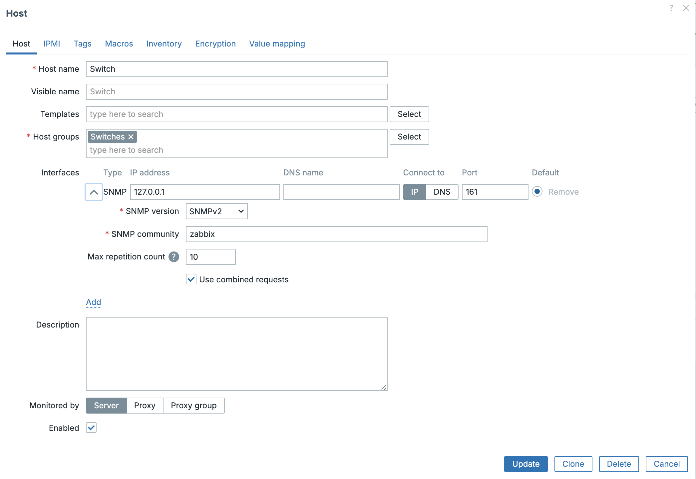
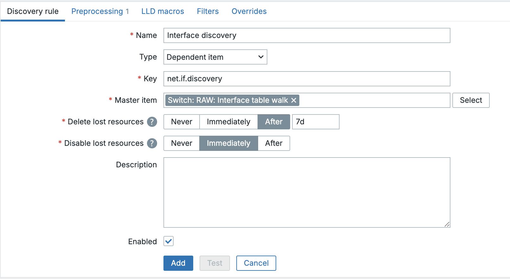
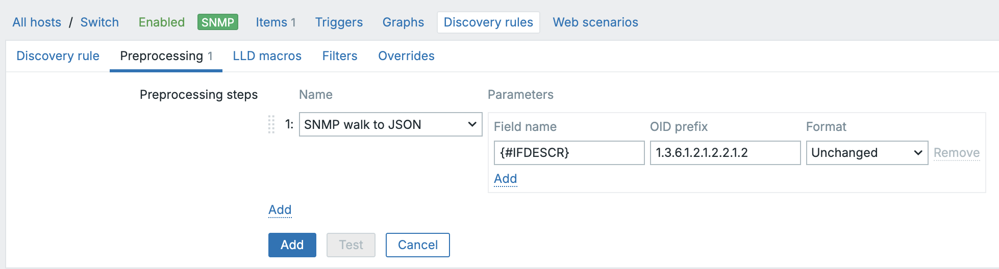
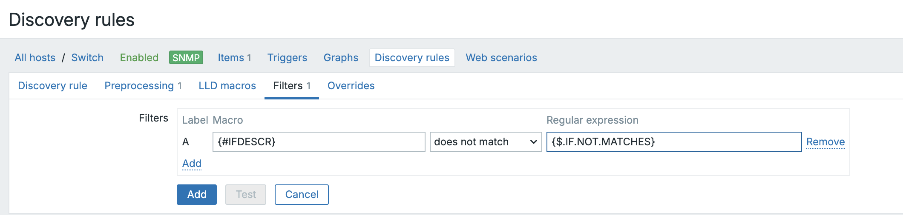
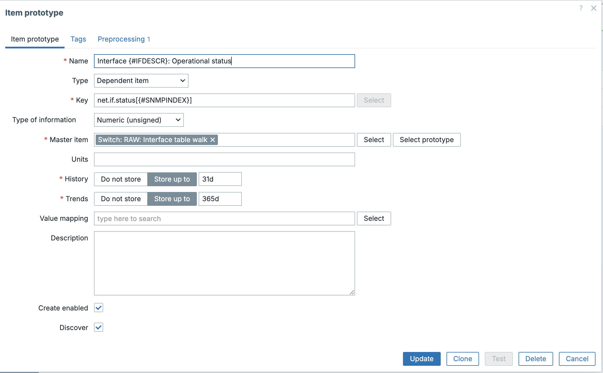

SNMP LLD
SNMP devices are one of the most common targets for Low-Level Discovery: switches and routers with dozens of interfaces, UPS units with several outlets, printers with multiple supplies. Rather than configuring items one by one, we want Zabbix to discover these objects automatically and keep them in sync as hardware changes.
For a long time there was only one way to do SNMP LLD: a native SNMP agent
discovery rule that walks the device itself, followed by SNMP item prototypes
that each poll the device again for their own value. Since Zabbix 6.4 there is a
second, far more efficient option: collect the whole table in a single bulk
walk[] request and let dependent items and a dependent discovery rule slice up
that one response. This is now the recommended approach, and the one we will
focus on in this chapter.
Note
This chapter assumes you already went through Custom LLD and Dependent LLD
earlier in this chapter. If dependent items and the Discard unchanged with
heartbeat preprocessing step are new to you, read those topics first, we will
build directly on top of that knowledge here.
Why the classic approach doesn't scale
In the classic setup, a native SNMP discovery rule queries the device for a
column such as ifDescr to find out which interfaces exist. For every
interface it discovers, Zabbix then creates item prototypes that are, again,
plain SNMP items. Each of those items performs its own SNMP request against the
device on every check.
For a switch with 48 interfaces and three metrics per interface (status,
inbound traffic, outbound traffic), that is one discovery request plus 144
separate polling requests, every polling cycle. On a device that also has to
answer routing, spanning-tree and hardware sensors, this adds up quickly and
is a common source of SNMP timeout errors in busy environments.
The dependent master item approach
The idea behind the new approach is the same one we used in Dependent LLD:
collect the data once, then reuse it. The difference is that Zabbix now has
native support for this on the SNMP side through two building blocks:
- The
walk[OID1,OID2,...]item key, which performs a single bulk SNMP walk over one or more OID subtrees and stores the raw result. - Two dedicated preprocessing steps,
SNMP walk to JSONandSNMP walk value, that know how to read that raw result and turn it into LLD macros or item values without touching the device again.
One request, one response, and every discovered interface plus every metric for that interface is derived from data we already have in memory.
Setting up our test data
To keep this example reproducible without any extra infrastructure, we will
install a standard SNMP daemon on a Linux host and expose its own network
interfaces through the standard IF-MIB. Any Linux host with net-snmp
installed and at least two network interfaces (a loopback and a real one)
works, including your Zabbix server itself.
Setup the SNMP daemon and config
Ubuntu
- Install the SNMP daemon and client tools
- Allow read access to the standard MIBs
Edit /etc/snmp/snmpd.conf and make sure a read-only community is defined,
for example:
- Restart and enable the service
- Verify locally
Red hat
- Install the SNMP daemon and client tools
- Allow read access to the standard MIBs
Rocky's stock /etc/snmp/snmpd.conf does two things that will trip you up if you just add a rocommunity line and move on:
It has a commented-out demo line, # rocommunity public default -V systemonly, which looks like a quick fix but restricts you to the same dead end described above. More importantly, further down the file it already wires the community public to a restricted view through a separate block, roughly:
com2sec notConfigUser default public
group notConfigGroup v1 notConfigUser
group notConfigGroup v2c notConfigUser
view systemview included .1.3.6.1.2.1.1
view systemview included .1.3.6.1.2.1.25.1.1
access notConfigGroup "" any noauth exact systemview none none
That block matches on the community string itself, so adding your own rocommunity public default further up the file does not override it, public stays tied to systemview, which only ever includes system and hrSystemUptime, never ifTable.
The reliable fix is to comment out that entire block and use a community string of your own for the lab:
- Open the firewall
firewalld is enabled by default on Rocky and blocks SNMP's UDP port 161
unless you allow it:
- Restart and enable the service
- Verify locally
Note
If the service still doesn't return interface data after fixing the community line, check journalctl -u snmpd and sealert before assuming snmpd.conf itself is still wrong, SELinux on Rocky is fairly strict by default and can silently block a restart.
Either way, this should list the ifDescr value for every interface on the host, for example lo and eth0 (Ubuntu) or lo and enp0s3 (Rocky's predictable network interface naming). Note that the community string differs between our two examples, public on Ubuntu, zabbix on Rocky, use whichever one you actually configured. If you get a result here, Zabbix will too.
Note
In production you will point this at a real switch or router instead of a Linux host, the configuration on the Zabbix side is identical. Only the community string, SNMP version and OIDs you are interested in change.
Creating the host and the master item
Go to Data collection | Hosts and either create a new host or open an
existing one, then add an SNMP interface pointing at the device (IP,
port 161, SNMP version and community).

8.21 SNMP Interface
Next, create the master item that performs the bulk walk:
- Name: RAW: Interface table walk
- Type: SNMP agent
- Key:
snmp.walk.raw(the key is a free-form identifier, unlike a regular SNMP item there is nothing SNMP-specific about it) - SNMP OID: walk[1.3.6.1.2.1.2.2]
- Type of information: Text
- Update interval: 3m
- History: Do not keep history (we only need this item to feed our
discovery rule and item prototypes, see
Dependent LLDfor why)
The OID 1.3.6.1.2.1.2.2 is the ifTable subtree of IF-MIB. Walking it once
returns every column, ifDescr, ifType, ifSpeed, ifOperStatus,
ifInOctets, ifOutOctets and more, for every interface in a single SNMP
session.
Tip
Press Test before saving. The raw result looks like a plain list of
OID = value pairs, for example:
IF-MIB::ifDescr.1 = STRING: lo
IF-MIB::ifDescr.2 = STRING: eth0
IF-MIB::ifOperStatus.1 = INTEGER: up(1)
IF-MIB::ifOperStatus.2 = INTEGER: up(1)
This is not JSON yet, and that is fine. Both SNMP walk to JSON and SNMP
walk value read this raw walk result directly, we never have to convert it
ourselves.
Creating the discovery rule
Go to Discovery rules and click Create discovery rule or click on the 3 dots
in front of the item and select the create dependent discovery rule
- Name: Interface discovery
- Type: Dependent item
- Key:
net.if.discovery - Master item: RAW: Interface table walk

8.22 LLD discovery rule
Now open the Preprocessing tab and add a single step:
- Name: SNMP walk to JSON
- Field name:
{#IFDESCR} - OID prefix:
1.3.6.1.2.1.2.2.1.2 - Format: Unchanged

8.23 LLD discovery preprocessing
Note
Unlike the JSONPath based dependent LLD we built earlier, there is no
separate LLD macros tab to fill in here. SNMP walk to JSON produces the
finished LLD JSON by itself, matching every index it finds under the given
OID prefix to a {#SNMPINDEX} macro and pairing it with the value you asked
for. If you need more than one LLD macro (say, both {#IFDESCR} and
{#IFTYPE}), just add a second SNMP walk to JSON step with its own field
name and OID prefix, both will end up in the same discovered objects.
Testing this rule against our sample data produces something like:
Filtering out interfaces we don't care about
We are not interested in the loopback interface. Go to the Filters tab of the
discovery rule and add:
- Label:
{#IFDESCR}does not match - Regular expression:
{$IF.NOT.MATCHES}
Then, on the host, go to Macros and create:
- Macro:
{$IF.NOT.MATCHES} - Value:
^lo$

8.24 LLD Filters
Creating the item prototypes
With the discovery rule saved, open Item prototypes and create the first
prototype for the interface's operational status:
- Name: Interface {#IFDESCR}: Operational status
- Type: Dependent item
- Key:
net.if.status[{#SNMPINDEX}] - Type of information: Numeric (unsigned)
- Master item: RAW: Interface table walk
In Preprocessing, add:
- Name: SNMP walk value
- Parameter:
1.3.6.1.2.1.2.2.1.8.{#SNMPINDEX} - Format: Unchanged

8.25_lld_item
The {#SNMPINDEX} macro is what ties this item to one specific row of the
table, ifOperStatus.1, ifOperStatus.2 and so on. This is the same
principle as the {#PRINTER.NAME} filter we used with JSONPath in the
previous topic, just resolved through a preprocessing step instead of an
expression.
Repeat this pattern for inbound and outbound traffic:
- Interface {#IFDESCR}: Inbound traffic
- Key:
net.if.in[{#SNMPINDEX}] - Type of information: Numeric (unsigned)
- Units: bps
-
Preprocessing:
- SNMP walk value, parameter
1.3.6.1.2.1.2.2.1.10.{#SNMPINDEX} - Change per second
- Custom multiplier,
8(converts bytes to bits)
- SNMP walk value, parameter
-
Interface {#IFDESCR}: Outbound traffic
- Key:
net.if.out[{#SNMPINDEX}] - Identical setup, using OID
1.3.6.1.2.1.2.2.1.16.{#SNMPINDEX}
Note
ifInOctets and ifOutOctets are counters, they only ever go up until they
wrap. Change per second is what turns that counter into a usable
bits-per-second value, exactly as you would configure it for a regular
(non-discovered) traffic item.
Trigger prototypes
A simple trigger prototype to flag a down interface:
- Name: Interface {#IFDESCR} is down
- Expression:
last(/Host/net.if.status[{#SNMPINDEX}])<>1
Because the operational status and the traffic items all share the same
{#SNMPINDEX}, trigger prototypes, graph prototypes and item prototypes stay
consistently linked to the same discovered interface without any extra
bookkeeping on our part.
One interval to rule them all (in this example)
There is a side effect of this design worth calling out. In the classic approach you had to balance two separate intervals: how often the discovery rule re-walks the device, and how often each item polls it. Here there is only one, the update interval of our walk[] master item, since both discovery and every dependent item are fed from that same request.
For a small lab that's convenient, but it hides a real cost. ifInOctets and ifOutOctets are counters, they change on practically every poll. Since our single master item bundles those counters together with ifDescr, its raw value is different every single cycle too, which means the discovery rule reprocesses the interface list every cycle as well, even though the actual set of interfaces on a switch rarely changes. On a device with a lot of interfaces polled every minute, that is a lot of needless discovery bookkeeping for something that almost never has anything new to discover.
Note
In a real production template, split this single master item into two:
RAW: Interface discovery
SNMP OID: walk[1.3.6.1.2.1.2.2.1.2] (just ifDescr, or whichever columns your LLD macros need)
Preprocessing: Discard unchanged with heartbeat, 1h
Used only as the master item for the discovery rule.
RAW: Interface data
SNMP OID: walk[1.3.6.1.2.1.2.2.1.8,1.3.6.1.2.1.2.2.1.10,1.3.6.1.2.1.2.2.1.16] (status, inbound, outbound)
Update interval: as fast as your data actually needs, e.g. 1m
Used only as the master item for the item prototypes.
The item prototypes and their SNMP walk value preprocessing stay exactly as described above, only their Master item field now points at RAW: Interface data instead of the combined item. The discovery rule's Master item keeps pointing at RAW: Interface discovery.
Because ifDescr barely ever changes, Discard unchanged with heartbeat: 1h means the discovery rule only actually reprocesses once an hour, or immediately the moment an interface really does appear or disappear, whichever comes first. The data item, meanwhile, is free to poll as often as you need without ever touching the discovery logic. This is exactly the same Discard unchanged with heartbeat trick from the previous topic, just applied to decouple discovery frequency from data collection frequency instead of reducing history writes.
We kept everything in a single master item in this chapter purely to keep the walkthrough shorter, once you understand the pattern, splitting it is a five-minute change.
Conclusion
The dependent master item approach turns SNMP LLD from "one request per discovered object, every cycle" into "one request, then pure preprocessing". The walk[] SNMP OID collects the whole table in a single SNMP session, SNMP walk to JSON derives the LLD macros directly from it without any JSONPath mapping, and SNMP walk value lets every dependent item prototype read its own value straight out of that same response.
The result scales the same way regardless of how many interfaces, outlets or sensors a device exposes, because the number of SNMP requests per cycle stays low and fixed, one if you keep discovery and data together like we did here, two if you split them as recommended above, instead of growing with every object discovered. Everything we covered here for ifTable applies just as well to any other SNMP table: UPS outlets, printer supplies, disk arrays, as long as the data is organised in indexed columns, this pattern will discover and monitor it.
Questions
- Why does the dependent master item approach reduce the number of SNMP requests compared to the classic native SNMP discovery rule?
- What is the practical difference between the
SNMP walk to JSONandSNMP walk valuepreprocessing steps, and where is each one used? - Why is there no
LLD macrostab to configure when usingSNMP walk to JSON, unlike the JSONPath based dependent LLD from the previous topic? - How would you extend this example to also discover and monitor the
interface speed (
ifSpeed, OID1.3.6.1.2.1.2.2.1.5)?